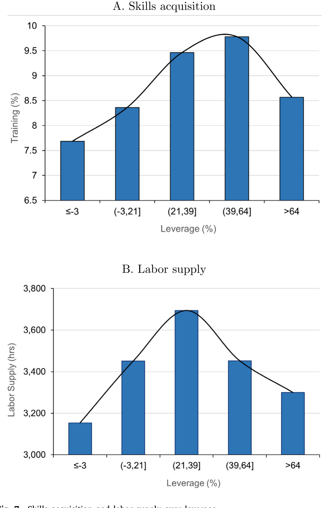
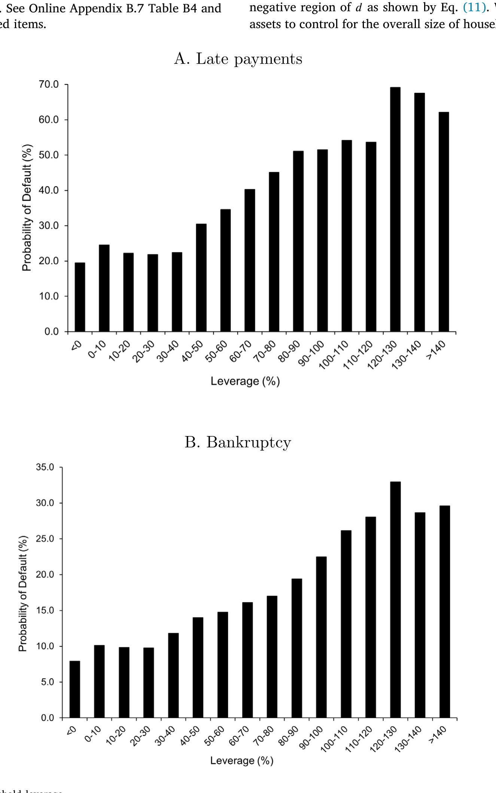
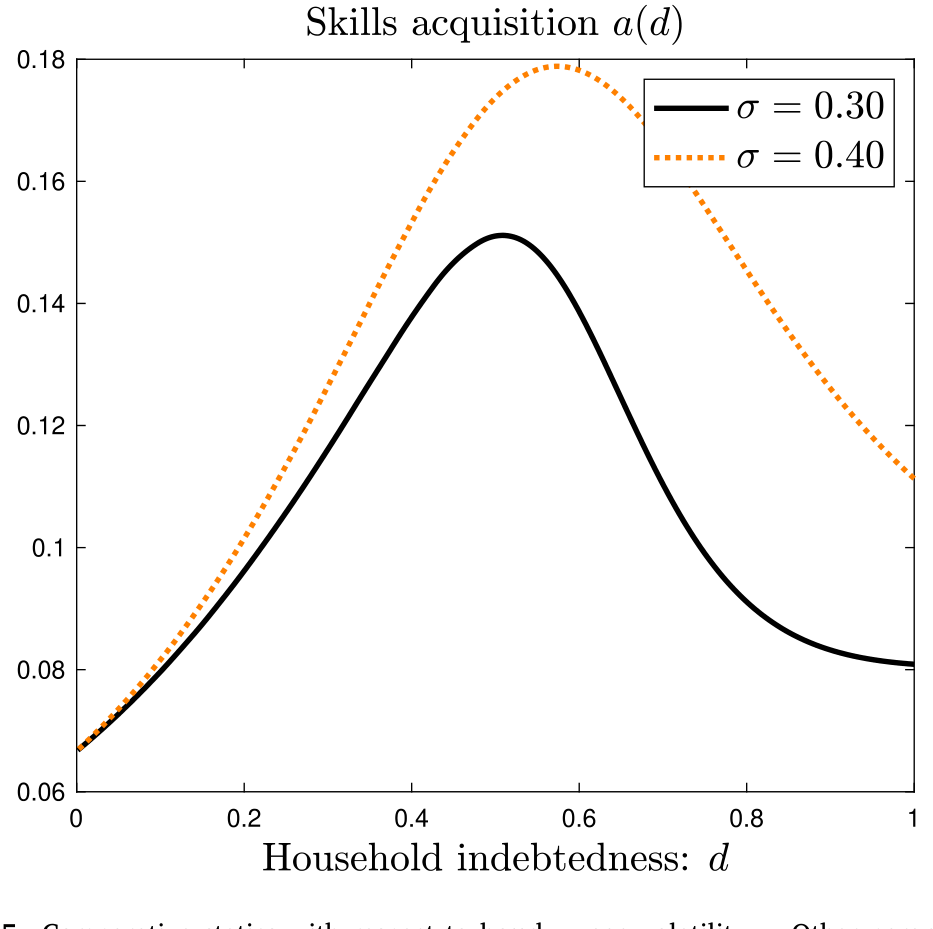
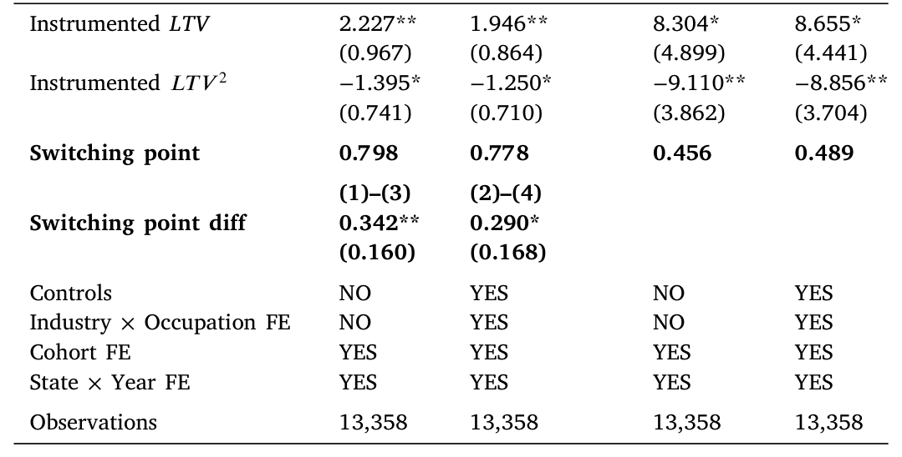
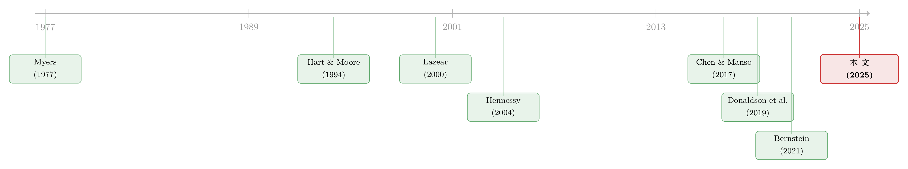

同样欠着债，为什么「学门手艺」比「多上一天班」更扛得住？
本文读的是 Manso, Rivera, Wang & Xia (2025, JFE)：当一个家庭背着沉重的债务、又随时可能破产，它会同时削减「多上班」和「学手艺」两件事——但削减的力度并不一样。因为劳动收入会被债主拿走、而学到的本事谁也拿不走，所以人力资本投资比劳动供给更扛得住债务积压；两者都对家庭负债率呈「驼峰形」，但技能获取这条峰下降得更慢、更晚。论文先用一个连续时间模型把这件事讲透，再用 NLSY79 的培训数据验证：培训参与在负债率约 59% 处见顶，而劳动供给早在 33% 就开始掉头。
1 一个被忽略的不对称
先讲一个大家都熟悉的故事。
一个家庭欠了一身债，又受到「有限责任 (limited liability)」的保护——也就是说，真到了还不起的那天，它可以宣告破产、把债一笔勾销。在这种处境下，它还有动力去拼命工作吗？
直觉上是没有的。你多上一天班、多挣一笔钱，这笔钱不会进你自己的口袋，而是先被拿去还债、推迟那个迟早要到来的破产时刻。换句话说，你承担了上班的全部辛苦，好处却有一大块流向了债主。这就是公司金融里那个经典的「债务积压 (debt overhang)」——Myers (1977) 半个世纪前就讲清楚了：当债务高悬，股东（这里换成家庭）不愿意再做本该做的投资，因为收益要先拿去填债主的坑。Donaldson, Piacentino & Thakor (2019)、Bernstein (2021) 把这套逻辑搬到了家庭身上，发现负资产的房主确实会减少劳动供给。（关于债务的这副「两刃」，可参见《债务这副药，为什么不能全吃？——重读 Jensen 和 Meckling 五十年》。）
到这里都还是「劳动供给」的故事。但本文作者抓住了一个一直被忽略的角色——人力资本投资 (human capital investment)，具体说，是人参加工作以后去学技能、受培训 (labor skills acquisition) 这件事。
接着，一个自然的问题是：债务积压会不会同样地、等比例地砸向「学手艺」？
作者的回答是——不会，而且这里藏着一个漂亮的不对称。
2 核心：人力资本「拿不走」
关键的一步，在 Hart & Moore (1994) 那个老洞见上：人力资本是不可剥夺的 (inalienable)。你脑子里学到的本事，跟着你这个人走，破产也带不走、债主也搬不动。
这一句话，把劳动供给和技能获取分成了两类东西：
- 劳动供给产生的是一次性收入 (transitory income)。这笔钱一旦被拿去还债，对家庭就再无任何额外好处了——财富彻底转移给了债主。
- 技能获取则不同。你今天学的本事会提高未来的时薪，而且——这是要害——这份更高的时薪在破产之后依然属于你。哪怕债一笔勾销、被信用市场扫地出门，你仍然可以靠这身手艺继续多挣钱。
于是「财富向债主的转移」在这两件事上是不一样的：劳动供给几乎是百分百地转移出去，而技能获取因为保留了一块「破产后仍归自己」的延续价值，转移得更少。转移得越少，债务积压的扭曲就越轻。
一句话记住这篇论文：债主能没收你的工资，但没收不了你的本事。 所以当破产逼近时，理性的家庭会优先保住「学手艺」，而更早地放弃「多上班」。
这个机制和《被「偷走」的增长：当员工带走的知识，反而成了让他卖力的理由》是同一枚硬币的两面——那篇讲的是员工能把知识带走、所以雇主反而要靠它来激励；这篇讲的是债务人能把技能带走、所以技能投资反而扛得住债务积压。
3 模型：把这件事一步步推出来
这是一篇有正经理论模型的论文，我们值得把它的骨架一步步搭起来。
设定。 一个无限期生存的家庭，从消费 \(C_t\) 中获得效用，从「学技能」的努力 \(a_t\) 和「上班」的劳动供给 \(l_t\) 中获得负效用。为了可解，作者假定对数消费偏好、二次型的努力成本：
$$ u(C,a,l)=\log C-g(a,l),\qquad g(a,l)=\theta_a\frac{a^2}{2}+\theta_l\frac{l^2}{2}+\theta_{al}\,a\,l. \tag{1} $$
这里 \(\theta_a\)、\(\theta_l\) 是学技能与上班的边际成本，\(\theta_{al}\) 刻画两者的互补/替代关系。基准模型先取 \(\theta_{al}=0\)（两者成本独立），之后再放开它来看丰富的情形。注意一个贴合实证的设计：作者让学技能不带货币成本——这是为了对应实证中那些「不由个人自掏腰包」的培训项目，从而把「钱不够（融资约束）」这个解释剔除掉，只留下「激励」这条通道。
家庭的终身效用是
$$ \mathbb{E}\!\left[\int_0^\infty e^{-\delta t}\,u(C_t,a_t,l_t)\,dt\right], \tag{2} $$
\(\delta>0\) 为主观贴现率。
人力资本的运动。 这是全模型的灵魂。时薪（人力资本）\(K_t\) 服从一个被「学技能努力」驱动的几何布朗运动 (geometric Brownian motion, GBM)：
$$ dK_t=K_t\big[(a_t-\rho)\,dt+\sigma\,dB_t\big]. \tag{3} $$
读懂它：努力 \(a_t\ge 0\) 推高未来时薪（漂移项里的 \(+a_t\)）；但技能会折旧，速率为 \(\rho>0\)（漂移项里的 \(-\rho\)）——学到的本事不会永远值钱；\(\sigma\) 是时薪的波动率，代表劳动收入的不确定性，且被假定为纯异质性风险。总工资是时薪乘工时，\(W_t=l_t K_t\)。
储蓄与违约。 违约之前，工资进储蓄账户，账户按 \(r(S_t)\) 计息、供消费支取：
$$ dS_t=\big(r(S_t)S_t-C_t+W_t\big)\,dt\quad\text{if } t\le \tau_D. \tag{4} $$
借钱时利率 \(r_B\)、存钱时利率 \(r_S $$
S_t=0\quad\text{if } t>\tau_D. \tag{5}
$$ 此后家庭变成「手停口停 (hand-to-mouth)」，消费等于当期工资。 值函数。 把上面所有东西装进一个贝尔曼问题里，家庭要联合选择消费、学技能、上班、以及违约时点 \(\tau_D\)，来最大化终身效用。值函数 \(F(S,K)\) 为： 这条方程是整篇论文不对称性的来源。请盯住最后那一项 \(H(K_{\tau_D})\)：违约后的价值只是技能 \(K\) 的函数，跟债务、储蓄再无半点关系。换句话说，破产那一刻，钱（储蓄/债务）被清零了，但本事 \(K\) 完整地结转了下来。正是这个 \(H(K)\) 把「破产后仍归自己」的那块延续价值写进了模型，让技能投资天然比劳动供给更抗债务积压。 驼峰从哪来？ 把这些一阶条件解出来，作者证明：学技能努力 \(a\) 对家庭负债率呈驼峰形 (hump-shaped)。背后是两股力量在拔河—— 负债低时第一股力主导，努力上行；负债越过某个门槛、违约逼近时第二股力压倒一切，努力下行。两股力一合，就是一条驼峰。劳动供给也是同样两股力，因而也呈驼峰——但因为劳动供给产生的是一次性收入、转移得更彻底，它的债务积压力来得更早、更猛。 到这里你以为故事讲完了：两条驼峰，技能这条更扛造。但真正精彩的一步在后面。 作者追问：劳动供给和技能获取是互相独立的两件事吗？ 不是。学技能之所以有价值，只因为你预期将来还要上班、还要靠这身手艺去赚那份「技能溢价 (skill premium)」（Autor et al., 2006）。如果你预见到将来劳动供给会因债务积压而崩塌——那学了技能又有什么用？ 于是反转出现：当模型预见到劳动供给在高负债处将急剧下滑，这个预期会「倒灌」回去，从一开始就压低家庭学技能的动力。 作者称之为「反向传导 (back-propagation)」效应。它在「学技能与上班高度替代」时尤其强——此时家庭被迫二选一，临近破产时会优先选学技能（因为它保值），而这份对未来劳动供给收缩的预期，又反过来劝退了今天的技能投资。 这个反向传导，把「劳动供给」和「技能获取」从两条平行的驼峰，拧成了一个深度纠缠的整体。它的政策含义很硬：研究家庭资产负债表对家庭行为的影响时，不能把「学技能」和「上班」拆开来单看。 这两条驼峰的形状，论文用一张图画得很清楚。  Figure 7: Skills acquisition and labor supply over leverage 而违约概率随杠杆如何攀升、又如何回过头来塑造上面那两条曲线，是整套机制的引擎：  Figure 6: Default probability and household leverage 模型还有两组很有说服力的比较静态。 技能折旧率 \(\rho\)。 当技能折旧得很快——也就是好处都挤在短期、未来不剩什么价值——它就越来越像劳动供给那种「一次性收入」。于是它对债务积压的抵抗力也随之消失：技能获取会在更低的负债率处就开始掉头，呈现出和劳动供给一样「早衰」的债务积压。这一条反过来印证了：是「保值/不可剥夺」这个性质在驱动全部结果。 时薪波动率 \(\sigma\)。 当时薪更不确定，风险厌恶的家庭会出于「预防性 (precautionary)」动机加码学技能来对冲不确定性；而且为了把「技能溢价」兑现，它还会相应地增加劳动供给。  Figure 5: Comparative statics with respect to hourly wage volatility 𝜎. Other parameter 光有模型不够。论文的后半程把预测带到了数据上，用的是 1979 年全国青年纵向调查 (National Longitudinal Survey of Youth 1979, NLSY79)——美国劳工统计局 (BLS) 自这批人少年时起就一路跟踪，记录了他们一生的财务与职业信息，包括逐条的资产负债表（用来度量家庭负债率）和逐周的劳动记录。 为什么是「培训」？这是全文最讲究的一处测量设计，灵感来自 Acemoglu (1997)——「现代经济中，很大一部分人力资本投资是在企业内部以培训的形式发生的」。NLSY79 的培训数据有三个恰到好处的特征： 样本是 这些结果都是在控制了性别、族裔、教育、婚姻、就业状态、生命周期因素以及多层固定效应之后得到的。 但读者最该追问的是识别。家庭负债率显然不是天上掉下来的——爱学习、有上进心的人，可能既背着特定的负债、又更爱报培训，这就把因果搅成了一锅粥。 作者的辩护分两步。第一步是逻辑上的：要让某个不可观测的混杂因素解释他们的结果，这个因素必须以一种很别扭的方式和负债率相关——它得在低负债时鼓励学技能、又在高负债时反过来劝退学技能，才能伪造出一条驼峰。能同时满足「在不同负债区间符号翻转」的混杂因素，并不好找。 第二步是工具变量 (instrumental variable, IV)。沿着 Bernstein (2021) 和 Gopalan et al. (2021) 的思路，作者用房价波动带来的、家庭按揭贷款价值比 (mortgage loan-to-value ratio) 的外生变化作为工具：房市的涨跌会机械地改写一个家庭的 LTV，而这部分变动很难说是由「这个人多爱学习」决定的。第二阶段回归确认了主结果。  Table 4: reports the second-stage regressions, using the instrumented 工具变量也不是万能钥匙。房价的局部冲击可能通过财富效应、抵押品渠道、地方劳动力市场等多条路径影响培训决策，而不只经由 LTV——排他性约束 (exclusion restriction) 在这里值得多打几个问号。作者用「符号需在区间内翻转」的论证来加固，但这更像是叙事上的合理化，而非排他性的硬证明。 模型还有一个漂亮的应用：债务减免 (debt forgiveness) 该减多少？ 作者做了一个模拟，相对 Donaldson et al. (2019) 多出两个关键维度——家庭风险厌恶、以及技能获取。结论是一条倒 U：适度的债务减免，通过缓解债务积压，能同时促进学技能和上班；但过度的减免会被「递减边际效用力」反噬——债减得太多，消费的边际效用降下来，家庭反而懒得再努力了。于是存在一个最优减免量。更妙的是，由于技能获取和劳动供给的拐点在不同负债水平上（ 把这条线索捋一捋，会看到两条河在这里汇流。 一条是公司金融的债务积压。源头是 Myers (1977) 的静态洞见——债务高悬会扭曲投资。Hennessy (2004) 把它动态化，第一次把债务积压和 Tobin's Q 直接挂钩、刻画了它在企业生命周期中的强弱。Chen & Manso (2017) 则在带宏观系统性风险的动态资本结构里量化了债务积压的成本。 另一条是人力资本与家庭劳动激励。Hart & Moore (1994) 立下了「人力资本不可剥夺」这块基石；Lazear (2000) 提供了在岗激励的框架。再往后，债务积压被搬进了家庭：Donaldson, Piacentino & Thakor (2019) 用劳动搜寻模型说明负债家庭不愿工作、进而压低就业；Bernstein (2021) 用负资产房主的数据给出了实证。 本文 (Manso et al., 2025) 正坐在两条河的交汇处：它建起第一个研究债务积压如何作用于人力资本投资的动态家庭金融模型，并点出一个被前人忽略的不对称——公司破产后「不复存在」或被移交给债主，而家庭破产后还要继续生活，从而能把那身「拿不走的本事」继续变现。  Q：「技能获取比劳动供给更抗债务积压」，这跟单纯说「不同投资的折旧期限不同」有什么区别？ 区别在机制，而非期限本身。期限只是表象——论文的因果钥匙是「不可剥夺性」：技能的回报破产后仍归家庭，所以财富向债主的转移更少、债务积压更轻。比较静态恰恰证明了这一点：当技能折旧极快（回报全在短期）时，它退化得像劳动供给，抗性也随之消失。是「保不保得住」而非「久不久」在驱动结果。 Q：那条驼峰的左半边——「负债越高越想学技能」——是不是有点反直觉？ 是反直觉，但有清晰的机制。左半边由「递减边际效用力」主导：负债上升压低了消费，消费的边际效用因而抬高，家庭于是更想多挣钱、多学技能来托住消费。只有当负债越过门槛、违约逼近，「债务积压力」才压倒它，曲线掉头。驼峰正是这两股力此消彼长的产物。 Q：59% 和 33% 这两个拐点的差距，可信吗？会不会是测量噪声？ 两个拐点来自不同结果变量（培训参与 vs 逐周工时）的独立估计，方向与模型预测一致（劳动供给的拐点必须更靠左），且在多层固定效应和一系列控制后依然成立。它不是同一条曲线上拍脑袋切出来的两点。当然，具体数值对杠杆的度量方式敏感，作者在 3.3 节专门讨论了这一点。 Q：把「不自掏腰包的培训」单拎出来，会不会反而制造了选择偏误？ 这是一把双刃剑。好处是关掉了「融资约束/钱不够」这个竞争解释，把镜头对准纯粹的激励通道；代价是雇主或政府是否出钱本身可能与员工质量、企业类型相关。作者还进一步要求「个人主动发起」来逼近模型里的激励含义，但这类样本筛选的外部有效性确实要打个折扣。 Q：家庭和企业的债务积压，真能用同一套语言讲吗？ 论文恰恰强调了它们的不同：企业破产后「不复存在」或被移交债主，而家庭破产后继续生活、还能靠保留的技能继续挣钱。正是这个差别，让家庭里多出一块企业模型里没有的「违约后延续价值」\(H(K)\)，也正是这块价值制造了技能与劳动供给的不对称。 Q：「反向传导」是模型的产物，还是数据里也能看见？ 严格说，反向传导是模型的一般均衡含义——很难在数据里直接「看见」一个预期倒灌的过程。数据能验证的是它的可观测推论：技能获取这条驼峰的形状、以及它随折旧率/波动率的移动。要直接识别反向传导，需要一个能外生改变「未来劳动供给预期」的冲击，这是后续研究的空白。 1）把这套逻辑搬到公司债：抵押品的「可剥夺性」如何调节债务积压？ 【经济故事】本文的钥匙是「人力资本拿不走」。企业里也有「拿得走」和「拿不走」的资产——专用性人力资本、客户/供应商关系等无形资产破产后可被原班人马带去新创业（论文脚注 8 已点到这层），而厂房设备会被债主处置。那么，无形资产占比高的企业，其投资是否对债务积压更有抵抗力？
【可行性】中。无形资产强度可用 Compustat 的 R&D、SG&A 资本化、Peters-Taylor 口径构造；债务积压用杠杆/到期结构度量。难点在识别外生的杠杆变化，可借鉴本文的房价/抵押品思路或债务到期断点。 2）外资持有人会放大还是抚平家庭/主权层面的债务积压？ 【经济故事】债务积压的核心是「收益漏给债主」。当债主是外国投资者，破产清算、再谈判的摩擦更大、协调更难——这是否会让借款人（无论家庭还是新兴市场主权）更早、更猛地削减「可被没收」的投入，而保留「拿不走」的部分？
【可行性】中偏低。主权层面可用外资持债份额 + 主权 CDS/财政努力数据；家庭层面缺乏「债主国籍」的微观数据，识别困难。更现实的是从公司债入手，用外资持有份额（如 TIC、基金持仓）作为债主类型的代理。 3）技能折旧率作为横截面尺子：AI 冲击下，谁的技能更「像劳动供给」？ 【经济故事】论文已用 Kogan et al. (2024) 的技术暴露刻画折旧率，并预测高折旧技能的债务积压「早衰」。AI 浪潮正在重排各职业技能的折旧速度——那么高 AI 暴露的负债家庭，是否正在更早地放弃技能投资、陷入「债务×技能贬值」的双重陷阱？
【可行性】高。NLSY79/PSID + 职业层面的 AI 暴露指标（如 Felten 或专利-职业链接）皆可得，本文的实证框架可直接复用，只需把折旧率换成 AI 暴露的连续度量。 4）债务减免的「拐点错配」：一项准实验。 【经济故事】模型给出一个尖锐预测——存在一个负债区间，多减一美元债会鼓励上班、却抑制学技能。这意味着同一项减免政策对「短期收入」和「长期人力资本」的效果可能方向相反。
【可行性】中。可借助学生贷款减免、Chapter 7 资格断点（收入中位数门槛）等准实验，用断点回归比较减免对劳动供给与培训参与的异质效果。数据可用行政记录或调查数据，识别相对干净。 先说贡献。这篇论文最漂亮的地方，是把一个看似技术性的设定——违约后价值 \(H(K)\) 只依赖技能、不依赖债务——变成了一个有血有肉的经济洞见：债主能没收你的工资，没收不了你的本事。由此自然长出「两条驼峰、错位拐点、反向传导」一整套可检验的预测，并且在 NLSY79 上得到了相当干净的对应（ 再说担忧。其一是识别：房价/LTV 工具变量的排他性并不牢靠，房市冲击有太多绕过 LTV 的路径，作者「符号需翻转」的论证更像叙事加固而非硬证明。其二是测量：把样本限定在「不自掏腰包、个人主动发起」的培训，虽然干净地剔除了融资约束，却也带来了一层选择，外部有效性要打折。其三，全文最优雅的「反向传导」其实无法被数据直接识别，目前只能靠模型的可观测推论间接支持。 后续我最想看到的，是一个能外生扰动「未来劳动供给预期」的设计——比如某项让特定群体预见到未来工时将系统性下降的政策冲击——来直接把反向传导从模型里「拽」到数据里。那将是对这篇论文核心机制最有力的一次检验。
4 反转：劳动供给的崩塌，会「倒灌」回学技能
5 比较静态：折旧快的技能，长得像「上班」
6 把模型带到数据：NLSY79 的培训记录
6867 个个体。结果干净利落地落在模型预测上：
59% 处见顶，之后掉头向下——一条漂亮的驼峰。33% 处就开始下滑。这正是模型说的「债务积压更早地在劳动供给上现身 (earlier manifestation of debt overhang)」。7 识别：一道来自房价的工具变量
8 一个政策含义：债务减免，多少才是「刚刚好」
59% vs 33%），两件事各自的最优减免量也不一样：存在一个区间，在那里多减一美元债，会鼓励劳动供给、却抑制技能获取。对那些技能会快速折旧、又面临转型的群体（如化石能源从业者，Aklin & Urpelainen, 2022），一笔温和的减免反而最能提振长期的技能与就业韧性。9 文献脉络
评论与延伸（Q&A + 研究方向）
(a) 几个可能的疑问
(b) 几个可能的研究问题与提案
我的判断
59% vs 33% 的拐点错位尤其说服力强）。它是第一个把债务积压、人力资本不可剥夺性、以及劳动供给的跨期联动装进同一个动态家庭金融框架的工作，定位清晰。参考文献